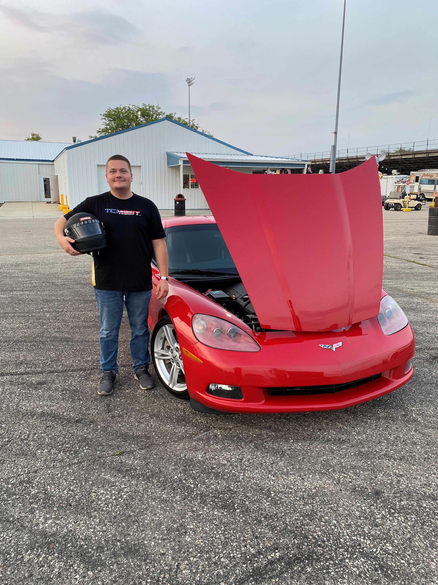

Hi, my name is Brian Lacniak. I am a returning student to Lewis working on my second Bachelor's. My major is computer science. Right now I live alone with my puppy named Cowboy in New Lenox.
In the summer months my favorite hobby is drag racing at the drag strip. I go with a lot of my friends who also race their cars. It is a great way to spend the day out at the track. I race my 2008 Corvette with an LS3 motor.
I am bilingual and Polish was my first language.